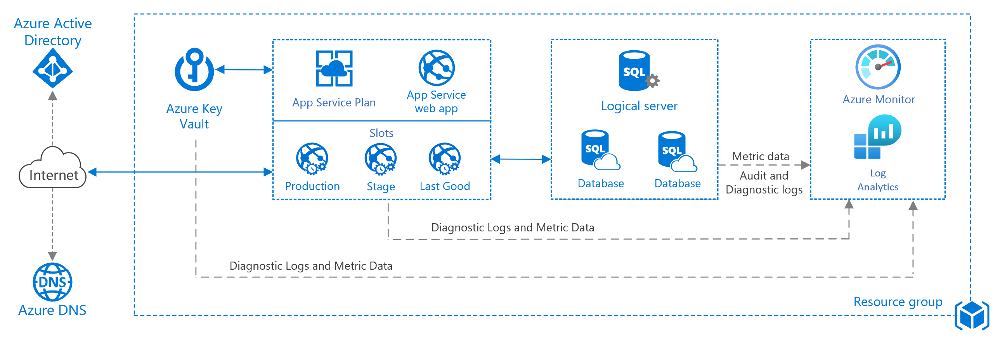

NOTE: Recently (around 19th February 2021), the basic web app architecture got updated. The new version shows more possibilities, as it uses Azure Key Vault, Azure Monitor and introduces deployment slots.
When you want to build an Azure-hosted web application that will use Azure SQL Database - it looks easy. You take a Basic Web App reference architecture, and you are set. It even has the ARM Template to deploy to have a working environment in just a few clicks.
But then, you might start thinking. “How secure it is for the enterprise application”? “What else should I learn to check my options”? And that’s how this series started. I wanted to build a secure environment for the web application hosted in Azure. It’s also a perfect opportunity to learn a lot about Azure architecture and components.
Building a secure web app in Azure
… without Application Service Environment (ASE). I will start with the basic web app reference architecture, and then I will add some elements to make it more secure. The components I want to use are:
- Azure App Service Web Application (in App Service Plan)
- Application Gateway
- Azure SQL Database
- Azure Key Vault
- Azure Monitor
- Azure Blob Storage
I will explore the options on how to connect between them, how to use SSL, networking options (service endpoints, private endpoints, subnet delegation), managed identities, RBAC, …
The architecture I want to use is almost a new basic web app architecture (see below), plus the Application Gateway before the Web App.

Quite a journey ahead.
images: Azure Documentation - Azure Architecture Center - Basic Web Application